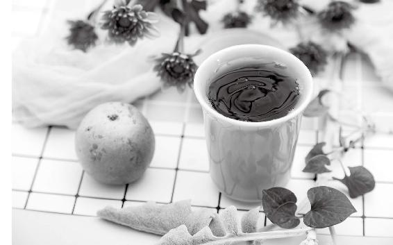

鱼腥草是“植物抗生素”，是天然的消炎药，对于抗肺部炎症很有效果。
肺热咳嗽，特别是干咳，或者是痰中带血的人，可以吃百合来止咳。
有肺气虚、肺阴虚，因而吃补药容易上火的人，可以吃百合来润肺滋补。

讲课的时候，我经常给大家打一个比方——
如果把五脏都比作人的话，肝是人体的劳模，吃苦耐劳，而肺却是一位娇贵的“豌豆公主”。
我们小时候都读过安徒生的著名童话《豌豆公主》：
一位美丽的女孩在暴风雨之夜来访，她自称是真正的公主。老皇后为了考察她，在她的床榻下面藏了一粒豌豆，上面铺上20张床垫，20床鸭绒被。
早晨，大家问她昨晚睡得怎样。“啊，一点儿也不舒服！”公主说：“我差不多整夜都没有合上眼！天晓得床下有什么东西，有一粒很硬的东西硌着我，弄得我全身发紫，这真是太可怕了！”
这个童话简直就像是为肺写的。肺就是这么娇贵的脏器，冷了、热了都不行，不能忍受一点脏东西，很容易被外来病毒感染，而且其他脏腑生病，肺也容易受连累。
古人讲，肺位最高，邪必先伤。它需要我们小心翼翼地呵护。
应该怎样用饮食养护肺呢？
如果痰湿重，先清肺化痰；如果气虚，补肺气；如果阴虚，注意润肺。
清肺排毒的食材：鱼腥草、罗汉果、牛蒡。
祛湿化痰的食材：陈皮、茯苓、桂花。
润肺的食材：银耳、百合、葛根。
补肺气的食材：黄芪、甘草、莲子。
雾霾、二手烟、病毒感染……常吃鱼腥草清肺
经常吸烟或者吸二手烟、雾霾、呼吸道病毒……这些都会伤肺。
可以常吃鱼腥草，它可以清肺排毒。
鱼腥草是“植物抗生素”，是天然的消炎药，对于抗肺部炎症很有效果。
泡鱼腥草茶的方法：每日用15〜30克鱼腥草干品，沸水冲泡饮用。泡水时多放一点，效果更好。
煮鱼腥草茶的方法：抓一把鱼腥草（15〜30克），放半锅冷水，稍稍淹没鱼腥草就可以，大火煮开以后，等一两分钟，马上关火，把药汤滗出来就可以喝了。
煮过的鱼腥草不要倒掉，下次喝的时候还可以加水，用同样的方法再煮一次，再喝。一共可以煮3次，正好够一天的量。
你也可以连续煮3次，把3次的药汤混合在一起，效果更好。
注意：不要像熬其他的中药那样长时间地去煮鱼腥草。若干品鱼腥草久煮，抗炎成分就挥发掉了。
百合的主要作用是补气养阴、润肺止咳、宁心安神。
肺热咳嗽，特别是干咳，或者是痰中带血的人，可以吃百合来止咳。要注意的是，风寒咳嗽的人不适宜。
有肺气虚、肺阴虚，因而吃补药容易上火的人，可以吃百合来润肺滋补。
百合润肺的吃法：
① 百合炖银耳，滋阴润肺，全家人都可以吃。特别适合口鼻干燥、咽喉痛、便秘的人。
② 蜂蜜蒸百合（做法：蜂蜜跟干百合一起拌匀，加一点儿水，上锅蒸熟），适合经常干咳的人。
这段时间疫情严重，乖乖地待在家里，每日坚持喝果菊清饮、银耳百合羹等，润肺、清火、消炎作用特别好。
——咩咩
不要小看这些偏方，真的差不多让我们远离抗生素了。
——云淡风轻
在中国，有1亿人患有慢阻肺，它也是位居第三的致死疾病。慢阻肺是无法治愈的，所以我们切记要预防。
慢阻肺是一种慢性肺部疾病的总称，它主要表现为慢性支气管炎和肺气肿。 它的主要症状是慢性咳嗽、呼吸不畅。
慢性支气管炎，是支气管反复发炎造成的，会连续几个月咳痰，有的人会腿肿、全身肥胖，甚至心力衰竭。
肺气肿，是肺部吸入了有害微粒，对肺泡造成了永久性损伤，使肺泡失去弹性，不能正常地回缩。
• 吸烟、吸二手烟
• 职业粉尘和化学物质
• 户外空气污染（雾霾、汽车尾气等）
• 室内污染（油烟、生物燃料取暖）
孕妇吸入了污染空气，还会影响胎儿。孩子出生、长大以后更容易得慢阻肺。
慢阻肺这个病，是慢慢发展的，年轻时并不明显，到了四五十岁才开始出现明显症状，到时候就悔之晚矣。
年轻人抽烟，以为没什么事，到了中老年，被慢阻肺困扰，才醒悟烟的危害之大。
要知道，慢阻肺一旦恶化，付出的便是生命的代价。“吸烟猛于虎”啊！
假如在办公室被迫吸二手烟，或是在雾霾季节，一定要给自己泡一杯鱼腥草茶喝。
原料：鱼腥草干品30克。
做法：1.取鱼腥草干品，放半锅冷水，稍稍淹没鱼腥草就可以，大火煮开以后，再煮2分钟，马上关火。
2.煮过的鱼腥草不要倒掉，下次喝的时候还可以加水，用同样的方法再煮一次，再喝。一共可以煮3次，正好够一天的量。
3.没有条件煮水，也可以直接泡水喝。泡水时多放一点，效果更好。
得了肺炎，要去医院接受正规治疗。回家后，可以用一些小方子辅助调理，缓解症状。
急性肺炎初起，可以用30克鱼腥草干品煮水来喝。
如果比较重，可以用1 000克到2 000克的新鲜鱼腥草加几片去皮生姜，榨汁来喝。
去年6月我爸脑卒中加脑出血，在ICU病房待了近两个月，后来情况稍微好些的时候，把我爸转到一家中西医结合医院，好处是可以通过鼻饲管喂饭、喂果汁。于是我大胆地给我爸榨了鱼腥草汁，心里也是惴惴不安，生怕喝得太多，没想到，第二天医生就说好得真快啊，又过了两天，就出ICU了。感谢陈老师，现在我爸可以自己走路，自己吃饭，一切都向好的方向发展，中医的力量真是强大。
——嘉嘉
看到陈老师在书中写到鱼腥草可以消炎，于是买了半斤（250克）回家给老妈冲水喝。老妈已经87岁了，之前因为肺炎住院了三次，出院回家后还比较虚弱，没胃口，喝了3天鱼腥草水后，感觉吃饭香了。连续喝15天，现在脸色好了，又可以出去晒太阳了。
——冯宝霞
得肺炎容易发高烧，可以用蚕沙竹茹陈皮水来辅助退热。
多年前，母亲在外地探亲时得了肺炎，一下子发起高烧来，烧得昏昏沉沉，起不了床。亲戚吓坏了，用轮椅把她推到医院，连输了几天液都没能退热。
过了几天，母亲清醒过来，自己到中药房买蚕沙、竹茹和陈皮，吃了一剂烧就退了。
原料：蚕沙30克，竹茹30克，陈皮30克。（幼儿可以各减为10克。这三味药相对平和，多点也没关系。）
做法：冷水下锅，水开后再煮3分钟。
服法：感冒高烧（成年人发热超过38.5℃，儿童超过39℃）时服用。一般的人喝一次就可以退热。严重的可以喝2〜3次，退热以后就不用再喝了。
适宜人群：幼儿、成人、普通孕妇、高龄老人都可以用。
太小的婴儿，一次喝不了太多药水。最好是少放点水，煮得浓一些。分成几次喂，每3个小时喝一次，至烧退为止。
这个方子特别适合家庭使用，它有三个特点：
① 三味药都相当安全，儿童、老年人、孕妇也可以放心地使用。一般来说，对于感冒或是肺炎引起的发热，都是可以退热的。
② 三味药都不怕过期，特别是陈皮，更是越陈越好。
③ 专门退高烧。
十年前，我公开了这个家传的简易退热秘方——蚕沙竹茹陈皮水。很多读者用了之后感觉效果很神奇——可以一夜退热，且不留感冒后遗症。
我家常年备着这几样药，以前是一麻袋一麻袋装的，急用的时候就各抓一大把来煮水，都没有称重量。
其实，如果将这方子的剂量减少平时用来饮用，还可以清湿热、化痰浊，对于风热毒引起的皮肤发红瘙痒有缓解作用。
这个方子仅有三味材料。因此，每样材料的质量对方子是否能快速、完全地生效，影响很大。
之前给大家讲过，方子中重要的一味药——陈皮，很容易买到伪劣品。真正的陈皮，应该是红橘的皮，现在习称为川陈皮。
若是买不到川陈皮，广陈皮也可以代替，用量最好加倍，以免无效。
把特定品种的竹子最外面一层绿色的皮去掉，露出里边青白色的部分，一条条刮下来，晾干后就是中药竹茹。
竹茹有个别名叫竹二青，意思是竹子第二层的青皮。这一层刮下来的竹茹，颜色淡黄绿，细闻有竹子的清香，质量最佳。再往里刮，刮到黄白色的内层，质量较次，不宜入药。
做竹子工艺品时刮下的竹丝，很多地方也当竹茹来卖，这个质量就更差了，最好不要。
顶级的竹茹，应该是选取生长一年的嫩竹，在冬天采伐，只取刮掉外皮后的头一层青皮制成。这样的竹茹，带一点黄绿色，有竹子的天然清香。
蚕沙就是蚕矢。蚕只吃新鲜的桑叶，所以蚕沙可以说是桑叶经过蚕加工后，结合动物和植物精华的一味药。
选蚕沙也有讲究，应该是粒粒结实，每一粒上面有6条明显的纵棱。
一般认为春蚕的蚕沙不如夏蚕和秋蚕的蚕沙。夏蚕、秋蚕的蚕沙，称为晚蚕沙，古人认为这样的方可入药，因为这时候桑叶已老，药性更好。
好的蚕沙应该是有清香气的。这种香有点像青草和茶的混合香气，闻起来是很舒服的。
肺炎咳嗽比感冒咳嗽更重，并且肺炎引起的不仅是咳嗽，还会咳喘，晚上特别难受。
如果咳嗽伴有痰黄，可以喝果菊清饮调理（见本书第139页）。
前天晚上咳嗽非常厉害，在这（新冠肺炎疫情）特殊时期，心中有点害怕。最后决定罗汉果煮茶，新鲜鱼腥草煮水，一天交替着喝。晚上咳嗽减轻许多，呼吸也轻松了。
——宁静致远
过年期间，家人感冒干咳，我喉咙痛、头疼，煮了葱姜陈皮水、鱼腥草梨皮水，过年一直喝果菊清饮，家人都没事了。疫情过后，大家更多需要思考的是人与自然的和谐共存，和平时顺应节气养生。
——Li瑜伽行舍
老公初十去超市，超市太热，回来在地下车库受了凉，发热38.2℃，我赶紧给他喝蚕沙竹茹陈皮水，早上喝了几口，下午喝了一碗。睡醒后出了好多汗，烧退到37.5 ℃。第二天早上完全不烧了。感谢陈老师。
——紫芽
我在海南，媳妇打电话说孙女发高烧39℃多，我就让她用陈老师的神奇退热方。家里之前剩下的竹茹只有十多克了，其他两样家里有，灵机一动，就叫媳妇第一次煮好，把竹茹挑出来，以防烧不退，再煮第二次。媳妇马上煮了给孙女喝，喝了大约三小时，果然退了一点，睡觉前又煮了第二次。一大早，媳妇就发微信消息给我，说孩子一晚上睡得很踏实，早晨醒来一量37℃，你说我有多高兴呀。
——9群读者
疫情期间，出现肺炎、发热、咳嗽的人都很担心和纠结。不要相信任何可以“通治”的神方，一定要根据个人的症状对症治疗。
如果是轻症，没有呼吸困难现象，平时身体不错的人，只要对症，简单的食疗或中成药也能有效。不必迷信某些“特效药”，避免误用虎狼之药，虽收一时之功，却留一世之患。
以下案例来自新冠肺炎疫情期间，读者们自我调理的经验分享。
我表弟得了急性肺炎，住院期间我每日给他煮鱼腥草，比他先住院的没出院，他却出院了。
——紫舟
腊月二十九那天，有个武汉疫区回来的人去过我老家拿东西，他高烧，但是自己瞒着没说。我嫂子初一就发热了；我侄子、侄女这几天也陆续有发热、咳嗽的迹象；前天我爸出门回来就不舒服；我哥去银行，回来就咳嗽。一家子全都有了症状。罗汉果、鱼腥草、七菜羹、经络梳齐上阵，到今天基本上都好了（因为我妈给我爸刮经络，所以她也被传染了，喉咙痛）。真的不敢想象，如果不知道允斌老师，我妈他们一大家子会是啥情况。
——姗姗（河南）
家里小朋友患支气管肺炎。一周里面跑了两家医院，发热第四天仍不见好转的迹象，我硬逼着她喝下250克的新鲜鱼腥草榨汁，三四个小时后已基本恢复正常，安心睡下。第二天一早又量，体温正常了！晚上用茱萸贴给她贴公孙穴，第二天咳嗽也一下子轻了很多！
——辰（上海）
昨天发热，全身酸痛，然后又正好是哺乳期，乳腺痛，加上现在的特殊疫情（新冠肺炎），不敢随便去医院。昨天晚上喝了老师的抗疫茶方，加上让宝宝多吸奶，今早起来烧退了，乳房也不痛了，人也清爽了，直到现在都没有反复发热。
——顺时生活会9群读者
2月2日凌晨，我给三岁的孩子盖被子，摸到孩子很烫，我突然就很慌张，起来量体温，38.1℃。如果孩子平时发热，物理降温就好了，可是这次由于新冠肺炎疫情，有点焦虑。我开始给他物理降温，配合推拿手法中的打马过天河，半个小时后，体温降到37.8℃。早上起来量体温，37.8℃。也是死活不吃。班长告诉我几个方法，于是赶紧用花椒生姜煮水给孩子泡脚；又让老公买了藿香正气水，回来给孩子滴肚脐；又把避疫香包拿来，打开放在孩子枕边，让他闻着香味睡觉。半夜我起来摸了孩子的额头，不但不烫，还出汗了，我心安了大半。今早起床量了体温，36.6℃，彻底退热。
——A宝
春节那天（1月25日），一位身处新冠肺炎疫区的朋友电话求助，说自己轻微腹泻，周身乏力，怀疑自己感染了病毒，已经把自己隔离起来了。我询问了情况后，根据老师顺时日历上写的，今年冬天的外感发热要先调理脾胃，再加上湖北连日阴雨天气，便推荐了藿香正气水+保和丸。大年初二，他已经有胃口吃饭了。
——倩倩
允斌点评：国家卫健委发布《新型冠状病毒感染的肺炎诊疗方案（试行第四版）》，与第三版相比，重要修订就是新增对观察期的患者推荐藿香正气水治疗。
我自幼摘除扁桃体，在这恶劣的环境中，我的喉咙口“硝烟弥漫”。我赶紧调来陈老师家的“大将”罗汉果和鱼腥草“轮番轰炸”，两天康复！
——顺时生活会4群读者
连续喝了三天的鱼腥草榨汁，肺炎基本痊愈了，不咳嗽了，基本也无痰了。
——小冰（重庆）
我家三个小孩，都查出肺炎支原体感染。从1月1日开始，连续喝了7天的新鲜鱼腥草榨汁，加了一点姜。这个月都没有咳嗽了。
——19群读者
2019年腊月中旬，我家小女发高烧，喝第一支藿香正气水退了烧，但是不明而来的咳嗽突然发作，干咳，时而又咳白痰，时而咳黄痰。咳得停不下来，孩子说：“妈妈，我的心都快要咳出来了。”我果断决定用鱼腥草加梨皮煮水给孩子喝，效果一天比一天好，直到痊愈。刚好我本人又重度感冒卧床两天，其间喝了两支藿香正气水效果不明显。我又想起陈老师说的适合多种感冒的救急食方“葱花豆豉汤”，于是我决定就用这个汤，我这两天除了喝水之外，只吃了三大碗葱花豆豉汤，第三天早晨起来精神面貌焕然一新。我和孩子的这次感冒太复杂了。感冒期间爱人多次催我们去医院，我坚持吃陈老师的食方，结果我和孩子的感冒发烧几天痊愈了。
——心静如水
我在湖北疫区，我们这里好多人都感冒了，我就教他们用老师的方法，用葱姜陈皮煮水，效果不错。我们这里没有草药卖，没有陈皮就用新鲜橘子皮代替。
——李姐
前几天我公公在武汉第五医院检查出双肺感染，反复低热超过一个星期不退。我就带着两个孩子回孝感老家隔离，这期间我一直往家里喷洒稀释的酵素水，家里也没买消毒液，就每日通风喷酵素杀菌消毒。我也给老公和孩子们煮过老师的防疫茶方，就是我抵抗力差，前两天在家带孩子吹了风感冒了，后背大椎、肺俞那一块儿怕冷，流清鼻涕，打喷嚏，没有发热，我也害怕自己被传染新冠病毒肺炎，因为在武汉的时候公公发热我帮他看过体温计。我感冒当天没来得及煮葱姜陈皮水，就喝风寒感冒颗粒，效果不大，不发汗，仍然怕冷，流清鼻涕。到第二天就煮了一次葱姜陈皮水，停了风寒感冒颗粒，改喝酵素消炎茶，多喝温开水，到昨天出了两次汗，汗擦干后休息了一会儿洗了个热水澡，今天基本上好了，不流鼻涕也不怕冷了。
——微笑以后（湖北）
我们住在广东江门，1月27日早上起床后，儿子身体不太舒服：乏力，怕冷（这样的症状，早几天就有了）。后来（新冠肺炎疫情）事态严重了，儿子才听从我的意见，关闭了酒吧，停业在家休息。当晚吃完晚饭后，儿子说肚子很胀。看陈允斌老师的公众号，我知道预防新冠肺炎的重点是“祛湿”。还好家里还有一盒加味藿香正气丸，赶紧给儿子服下。半小时后，儿子拉了两次（没有拉稀），精神状态也好多了。
——春燕（广东）
我因为肺炎在医院输液半个多月了，身体变得很虚，脚脱皮，脚后跟开裂，还很痛。去年10月开始用老师的许多食方：补气减肥饮、顺时粥、补肾养藏汤、白果墨鱼汤、大寒饭、小寒饭、补血四宝饮、补心养阳汤……还坚持吃了四个月的鱼腥草（凉拌鱼腥草、鱼腥草水、鱼腥草茶），就这样，我安然度过了这个冬天。其间出现过一次风寒感冒症状，当晚喝了一碗葱白连须水，第二天早上就好了。现在，我不但爬楼梯不喘了，出汗没那么厉害，就连我的妇科炎症也好了很多。而我的脚后跟也完全愈合了，原先的蜕皮部位开始变得光滑滋润起来。
——nice tea